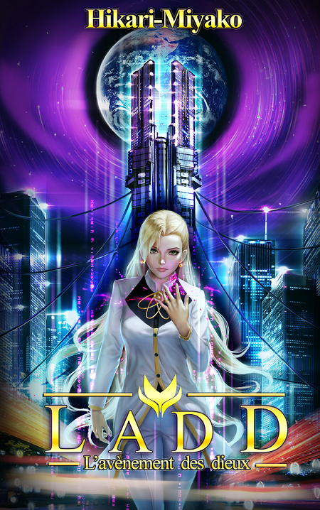
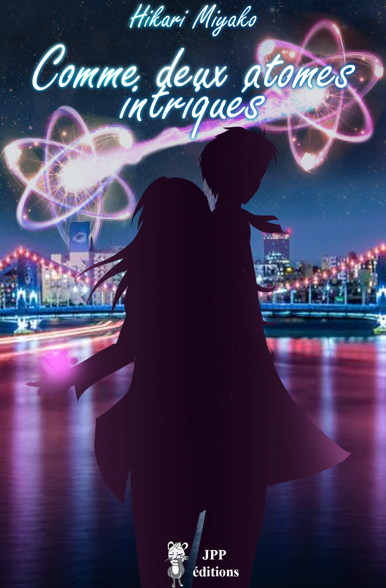

Even the all-powerful Pointing has no control about the blind text.
Far far away, behind the word mountains, far from the countries Vokalia and Consonantia, there live the blind texts. Separated they live in Bookmarksgrove right at the coast of the Semantics, a large language ocean.
A small river named Duden flows by their place and supplies it with the necessary regelialia. It is a paradisematic country, in which roasted parts of sentences fly into your mouth.
How it works?
- 1 A small river named Duden flows by their place and supplies it with the necessary regelialia
- 2 Far far away, behind the word mountains, far from the countries Vokalia and Consonantia, there live the blind texts. Separated they live in Bookmarksgrove right at the coast of the Semantics.
- 3 Bookmarksgrove right at the coast of the Semantics, a large language ocean.
Mes Romans

LADD T1: Le requiem d'améthyste
« Ceux qui tentent de modifier la course du temps doivent être supprimés de l'Histoire » Dans une France envahie par de mystérieux soldats, Drago, fils d'éminents scientifiques, se voit confier une mission : voyager entre les dimensions pour obtenir l'aide de Violette Leblanc, présidente de la plus puissante organisation mondiale. Toutefois, la France alternative dans laquelle il débarque peine à se remettre de la plus grande catastrophe nucléaire de l'Histoire. Cette société, où l'humanité a évolué aux côtés de créatures surnaturelles, est déchirée entre l'autorité de Violette et ses opposants, qui prennent en chasse le garçon dès son arrivée. Entre maîtrise de ses pouvoirs, légendes oubliées et nouvelles amitiés, Drago découvrira que, derrière le pendentif légué par a sœur se cachent les rouages d'une mécanique qui le dépasse. Mécanique enclenchée vingt-cinq ans plus tôt, lorsqu'un sinistre requiem résonna dans le ciel de Tokyo, un paisible après-midi d'avril 1988...

Comme deux atomes intriqués
« Certaines âmes sont liées depuis leur naissance, destinées à se rencontrer, comme deux atomes intriqués. » 1978. À seulement 15 ans, Violette Leblanc, jeune prodige de la physique, intègre la prestigieuse l'université Rikoukei à Tokyo. C'est ainsi qu'elle rejoint le club de sciences, E.T.H.E.R où elle fait la rencontre de trois étudiants excentriques, et du second meilleur élément de l'académie : Soichiro Namatame. À ses côtés, Violette tente de percer les mystères d'une étrange énergie aux propriétés fascinantes, le Kvantiki, dans l'espoir de se faire une place dans la communauté scientifique. Cependant, ses recherches attisent les convoitises, et menacent par la même occasion un secret que Violette s'efforce de protéger à tout prix, pour son propre bien, mais également pour celui de la France.

Arthus Leclipse T1
T21 aout 1797. Après une guerre sanglante entre deux organisations de l'ombre, ESP et Savior, le monde est partagé en deux entre l'Est asiatique et l'Ouest américain. Au milieu de ce chaos nait un nouvel État : Europa. C'est dans cette terre libre que, deux cents ans plus tard, est créé Arthus, un humain artificiel nommé « familier ». Alors que son créateur lui donne pour mission de se fondre dans la masse, cet objectif sera mis à mal par sa rencontre avec Yuki Fuyuku, une Esper de Tokyo, membre de l'une de ces deux organisations. À ses côtés, Arthus va être pris dans un engrenage qui le mènera à enquêter sur des phénomènes étranges et à faire la chasse aux cryptides. Mais dans ce quotidien insolite se cache un secret férocement gardé par les dirigeants de l'ombre. Un secret directement lié à la véritable raison de la création d'Arthus. Un secret remontant à l'origine de l'existence des mystérieux pouvoirs qui ont façonné le monde actuel.